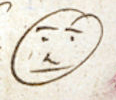
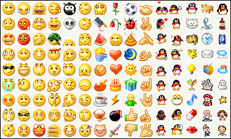
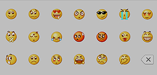
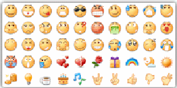
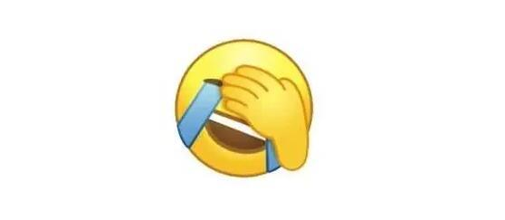

菜单
主界面
小黄人表情
互联网早期
:) 字符表情
颜文字
qq时代
小黄人表情
“中老年”表情
兔斯基表情
绿豆蛙表情
diy时代
暴走漫画表情
微信时代
假人表情
熊猫人表情
王境泽表情
窃格瓦拉表情
DIY动图表情制作
表情起源
 最早的小黄人表情出现于公元前一千七百年左右的赫梯(Hittites)遗迹中，如右图。在那时人们就已经用圆+点+弧线来表示一个笑脸了。
而标准的小黄人表情☺(Smiley)是由哈维.波尔(Harvey Ball)在1963年设计的，并且也被应用到了utf-8标准中。即是符号☺ 而在之后的聊天室,QQ等通讯软件开始使用起了小黄人表情，使得小黄人表情流行了起来
表情例子
有意无意间，人们都会用到小黄人表情,例如:
QQ

微信

贴吧

滑稽、捂脸笑
小黄人表情以其生动简洁征服了许多用户，而在其中又以滑稽表情和捂脸笑最为流行：
滑稽
滑稽表情出自百度贴吧的小黄人表情序列，因为所能表现出的复杂感而深受网友喜爱。
捂脸笑

捂脸笑表情出自微信的小黄人表情序列，据设计师说是周星驰带给了她灵感，该表情哭笑不得的感情引发了许多网友的共鸣，从而深受网民喜爱。
written by: 黎思宇、 刘旭鑫
致谢开源
MDUI
开发者们